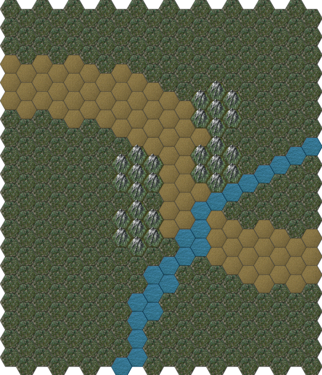

Gulley Near City of Eagles¶
The road forms a pretty slope down to a sluggish steam, the soil above the water has been eroded away, exposing large rocks on each side.
See The Exchange.

Gulley¶
Scale: 1 hex = 2m
The party will be passing from left-to-right as they move from North-West to South-East on their way from City of Eagles to City of White Water.
Steward is part of the Cult of the Jackal. He runs the spy ring in City of Eagles. He travels every few days, and exchanges notes at various agreed locations along the way.
He knows a little of Xorn’s plans, preferring to ignore them. He tries to gather data on everyone: nobles, merchants, priests, and mages. He passes what is expected up to the Cult and keeps the rest, doing a side business of minor blackmail and extortion for fun and profit.
He is cruel, but does nothing in person. He has some Jackals who are killers and will ruthlessly wipe out whomever he names. This keeps other spies, and the authorities, away from him.
He will turn on the Jackal Temple for a chance to have wider influence. He’s really interested in upsetting the Earl’s power structure via a wider war of royal ascension and the start of a new allocation of lands.
His men have barely had time to dig in behind the rocks on either side of the road. The Thug Leader and two men will be on one side. Steward and three thugs will be on the other.
The thugs do not have a strong will to fight. When one is taken down, the other 4 will consider running. The leader and Steward, however, are out for blood.
Steward: Agility 3D+1, melee combat 1D, Coordination 2D+2, sleight of hand +2, Physique 3D+2, Intellect 3D, cultures +1, reading/writing +1, speaking +1, traps +2, Acumen 3D+1, disguise +1, gambling +1, hide 1D, investigation +1, search +1, streetwise +1, Charisma 3D+2, persuasion 1D, Extranormal 2D. Advantages: Contacts (R1), Barkeep, Stable Boss, Disadvantages: Quirk (R2), Ruthless use of power; Employed (R2), Temple of the Jackal; Quirk (R2), Voyeur; Quirk (R1), Secret identity as spymaster, Special Abilities: Uncanny Aptitude (R1), Eidetic memory, Move: 10, Strength Damage: 2D, Fate Points: 1, Character Points: 5, Body Points: 24, Description: Jackal Spy Master in City of Eagles.
Hired Thug Leader: Agility 3D, fighting 1D, melee combat +2, Coordination 3D, Physique 3D, stamina 1D, Intellect 3D, healing +2, Acumen 3D, hide 1D, streetwise +2, tracking 1D, Charisma 3D, intimidation 2D+2. Disadvantages: Devotion (R2), Cult of the Jackal; Employed (R2), Cult of the Jackal; Quirk (R2), Exercise Nut, Move: 10, Strength Damage: 2D, Fate Points: 0, Character Points: 5, Body Points: 20, Equipment: padded leather armor +1D; Short bow 1D+2 10/100/250 (6 arrows); hatchet 1D+1.
Bandit Army – Guard, Thug, etc.: Agility 3D, fighting 1D, melee combat +2, Coordination 3D, Physique 3D, Intellect 3D, Acumen 3D, Charisma 2D. Disadvantages: Devotion (R3), Cult of Jackal; Employed (R3), Jackal Temple; Quirk (R2), Hopes to becomes an agent, Special Abilities: Natural Hand-to-Hand Weapon (R3), Brutal punch, Move: 10, Strength Damage: 2D, Fate Points: 0, Character Points: 5, Body Points: 24, Equipment: padded leather armor +1D; Short bow 1D+2 10/100/250 (6 arrows); hatchet 1D+1.
GM Note
See Cult of the Jackal for details on the external intelligence organization.
If any of the thugs survive, they will go back to Eagles, and from there, follow a secret trail to the Temple of the Jackal. If the thugs continue to survive the multi-day trip to the Temple, and the party is able to follow them without alerting them, then, skip to Find Squire Starter.